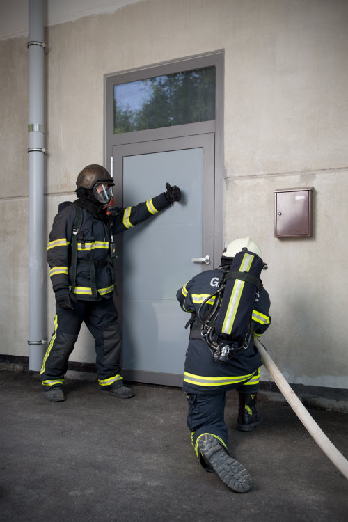
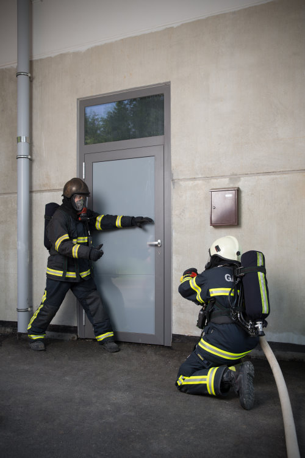
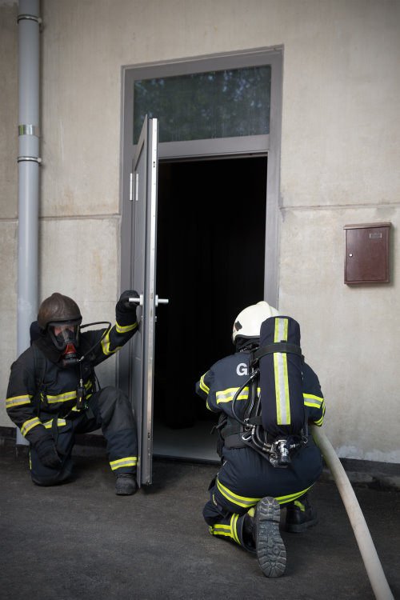

Vstop in priprava
Ob vstopu in gibanju po prostoru se gasilec sooča s številnimi nevarnostmi in neprijetnostmi, predvsem pa je njegova naloga odstraniti tri najpomembnejše težave. Ob vstopu prekiniti oziroma preprečiti povratni udar, med gibanjem po objektu le-tega dovolj ohladiti in preprečiti požarni preskok, v kolikor se ta še ni zgodil.
Za preprečevanje povratnega udara napadalna skupina ob vstopu opravi manever tipanja in preverjanja temperature vrat od spodaj navzgor in za tem ohlajevanje prostora z dolgimi razpršenimi curki po liniji nevtralne cone. Na ta način napadalna skupina znižuje energijo v prostoru, ta pa je ključna za nastanek povratnega ognja. Ko napadalci uspešno vstopijo, med gibanjem po prostoru, po potrebi, pod strop v različne strani gasijo s kratkimi razpršenimi curki. S tem ohlajujejo prostor in vroče dimne mase pod stropom. Vroče dimne mase so ključne za prenos energije v obliki sevanja iz jedra požara, na požar po celotnem prostoru v obliki požarnega preskoka. Če se napadalne skupina znajde v požarnem preskoku, je edina prava rešitev nagel umik iz objekta.



Slika 4, 5 in 6: Prikaz pravilnega vstopa v objekt
PO KORAKIH IZBERI PRAVILNI POSTOPEK